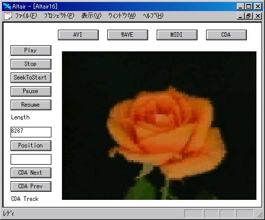

MultiMedia OLE Control
第0.43版 2016年10月23日
第0.08版 1997年 2月11日
概要
AlMmコントロールは、AVIファイル、WAVEファイル、MIDIファイル、CDオーディオの
再生等ができるOCXです。このOCXはalcore1.dllには依存しません。
OCXを使うためにはRegsvr32.exeでOCXをレジストリに登録する必要があります。
名前は、「AlMm Control」で、ProgIDは、「ALMM.AlMmCtrl.1」です。
AlMmのメソッド
AlMmでは、異なったメディアの複数のファイルを扱うことができます。
ファイルをオープンするときにaliasNameをつけてこれをIDとしてデバイスの
管理を行っています。
オープンできるファイルの拡張子は.avi、.wav、.midでCDオーディオに関しては
".cda"とだけfileNameに書けばオープンできるようになっています。
オープンに成功すると0が返ります。
AlMmには、カレントのデバイスという概念があります。
Play等のメソッドを発行するとこれはカレントのデバイスに対して発行されます。
Selectメソッドは、aliasNameのデバイスをカレントデバイスにするメソッドです。
成功すると0が返ります。
現在のカレントのデバイスのaliasNameを返します。
カレントのデバイスが指定されていないときは"no current device"という文字列が
返ります。
カレントのデバイスを閉じます。成功すると0が返ります。
このメソッドに成功したらカレントのデバイスの指定がなくなります。
カレントのデバイスの時間の長さをミリセカンド単位で返します。
カレントのデバイスの開始位置を返します。
カレントのデバイスの現在の位置を返します。
カレントのデバイスの位置をpositionで指定される位置に移動します。
成功すると0が返ります。
カレントのデバイスの位置を開始位置にします。
成功すると0が返ります。
カレントのデバイスの位置を終了位置にします。
成功すると0が返ります。
再生を行うとき、カレントのデバイスの再生が終わるまで待つかどうかを指定します。
flagが0なら待たない、0以外なら待つです。デフォルトは待たないです。
再生を行うときに再生時間の設定をミリセカンドの単位で行います。
終了位置まで再生させるときは-1を指定します。
デフォルトは-1です。
メディアの再生を開始します。成功すると0が返ります。
メディアの再生を中止します。成功すると0が返ります。
メディアの再生を一時停止します。成功すると0が返ります。
一時停止していたメディアの再生を再開します。成功すると0が返ります。
カレントのデバイスの状態を返します。
返る文字列は次の中のどれかです。
"not ready"
"pause"
"play"
"stop"
"record"
"seek"
"other status"
"device not selected"
WAVEサウンドの再生/録音の準備を行います。
成功すると0が返ります。
WAVEサウンドの録音を行います。データは現在の位置に挿入されます。
成功すると0が返ります。
WAVEサウンドの録音を行います。データは現在の位置に上書きされます。
成功すると0が返ります。
WAVEサウンドのデータの消去を行います。成功すると0が返ります。
WAVEサウンドのデータをfileNameで指定されるファイルに保存します。
成功すると0が返ります。
CDオーディオで、CDをドライブからイジェクトします。
成功すると0が返ります。
CDオーディオで、現在のトラック番号を返します。
CDオーディオで、CDにあるトラックの総数を返します。
CDオーディオで、トラック番号をindexで指定されるものにします。
成功すると0が返ります。
OCXのバージョン情報を含むダイアログを出します。
AlMmのイベント
再生が終わるのを待たないモードで再生を行っているとき、
再生が正常に終了した場合に通知されるイベントです。
再生が終わるのを待たないモードで再生を行っているとき、
再生が後続されるときに通知されるイベントです。
再生が終わるのを待たないモードで再生を行っているとき、
再生が中断されたときに通知されるイベントです。
再生が終わるのを待たないモードで再生を行っているとき、
再生が正常に終了しなかったときに通知されるイベントです。
サンプル
前準備
Altairのサンプルの前準備で、
ライブラリgbgp.albが作成されていることを確認してください。
プロジェクトgbgp.aprを開いてください。
クラスGbGpをダブルクリックしてください。
関数Runのところにキャレットをおいて
メニューの「インタプリタ - 実行」を行ってください。
これでGbGpサンプルが立ち上がります。
「開く」ボタンでMMedia/MMedia.gprを開いてください。
ここでコントロールパネルの「実行」を行ってください。
目的の画面が現れます。
通常のテープレコーダーやビデオと同じような使い方で
マルチメディアのファイルを再生することができます。
